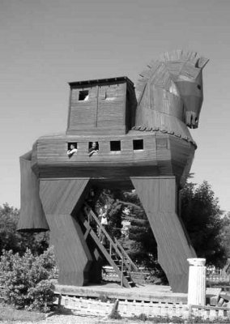

Frigya (Phrygia) kralının düzenlediği bir koşu yarışmasında birinciliği kazanan İlos, Çanakkaleli çiftçi Tros'un oğluydu. Yarışmanın ödülü; köle olarak çalışacak "elli genç kız ve elli delikanlı"dan oluşan bir topluluktu!.. İlos, kölelik denen olguyu hiç kabul etmediği ve etmeyeceği için de kazandığı bu ödülü almadı! Böyle bir tepki karşısında şaşkına dönen kral, sarayın bilicisine başvurdu. Bilici de bu ödüle ek olarak, kara benekli bir inek vermesini öğütledi krala. Frigya kralı, birkaç gün düşünüp taşındıktan sonra İlos'u çağırttı ve bütün iyi yürekliliğiyle; "Sen bu genç kız ve erkeklerle birlikte ineği de al götür. Ve bu kara benekli inek nerede durursa orayı yurt edinin. Oraları ve çevresini size bağışlıyorum," dedi...
İlos ve onun köle olarak değil ama can dostları olarak benimseyip yanına aldığı elli genç kızla elli delikanlı, kara benekli ineğin ardı sıra yol almaya başladılar. İnek akşama doğru yorulup şimdilerde Gaflettepe dediğimiz Çanakkale yakınlarındaki bir yerde durdu; biraz otlandı, sonra da oraya çöküp uyuklamaya başladı. İlos ve genç arkadaşları orayı ve çevresini hemen yurt edindiler. Bu tepenin az ötesindeki ovada, günümüzde Küçük Menderes dediğimiz Skamandros Nehri ile o zamanlar Smoeyis denen Dümrül Çayı akıyordu. Bu akarsuların ikisi de tanrıydı. Artık İlos'la arkadaşları; Çanakkale bölgesindeki denize karşı bu boş toprakları ekip biçmeye, evler-yollar yapıp o yöreyi kentleştirmeye başladılar. Kent günden güne genişliyor, güzelleşiyordu...
İşte bu kentleşme çalışmaları böylece sürüp giderken, hiç beklenmeyen bir anda tahtadan bir tanrıça heykeli düştü gökyüzünden!.. İlos ve arkadaşları, böylesi bir olayı çok iyiye yordular. Palladyon (Palladion) adını verdikleri bu tahtadan heykeli, yeni kurmakta oldukları kente ölümsüz Olimposlu tanrıların bir armağanı olarak algıladılar... Ve bir tapınak oluşturup heykeli oraya yerleştirdiler.

Troya Atı
Ondan sonra da, köleliği dışlayan İlos'un adını anıştıracak şekilde, "İlyon" adını verdiler bu yeni kurdukları kente. Daha sonraları İlos'un babası Tros'u da anıştıracak şekilde, iki sözcüğü kaynaştırıp "Troya" demeye başladılar.
İlos ve arkadaşlarının kurduğu Troya kenti tez gelişti; kıyısında bulunduğu Çanakkale Boğazı'nın ayrıcalıklarını da çok iyi kullanmaya başladı. Zaten bu kent konumu gereği, Karadeniz ve bütün Akdeniz'i kapsayan alışveriş odaklarının da merkezini oluşturuyordu. Üstelik o ilkçağlarda, Anadolu halkları arasında savaş olgusu pek fazla söz konusu olmadığı için, halklar bolluk ve rahatlık içinde yaşıyor; uygarlık yolunda durmadan ilerliyorlardı. Krallığın kulaktan kulağa yayılan bu varsıllığı komşu Yunanistanlı kralların düşlerine bile giriyordu artık. O yüzden de Troya'yı talanlamak için, yakım-yıkım ve sömürü savaşlarının zembereğini kurmaya başladılar.
Bir süre sonra da İlos'un arkadaşlarıyla el ele verip kurdukları ve kardeşliğin egemen olduğu bu ilk Troya'dan sonra nice Troyalar; ardı ardına yağmalandı, yakılıp yıkıldı...